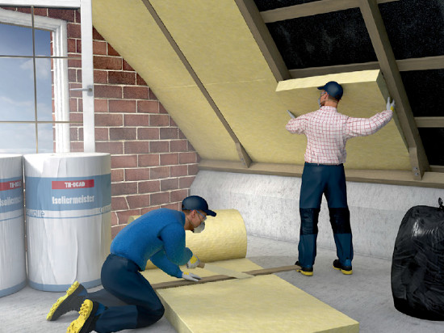

Mineralwolle-Dämmstoffe
Glaswolle, Steinwolle, Schlackenwolle
|
|

Gefährdungen
- Seit 1996 werden Mineralwolle-Dämmstoffe hergestellt, die nicht als krebserzeugend gelten.
- Auch beim Umgang mit neuen
Produkten kann es durch gröbere Fasern (Faserbruchstücke) zu Haut-, Augen- oder Atemwegsreizungen kommen.
Allgemeines
- Seit dem 01.06.2000 dürfen
in Deutschland nur noch KMF-Dämmstoffe produziert und
verarbeitet werden, die nach
der Gefahrstoffverordnung als
unbedenklich (frei von Krebsverdacht) gelten.
Schutzmaßnahmen
Technische und organisatorische Schutzmaßnahmen
Es sind folgende Mindestmaßnahmen zu beachten:
- Vorkonfektionierte oder kaschierte Mineralwolle-Dämmstoffe bevorzugen.
- Verpackte Dämmstoffe erst am Arbeitsplatz auspacken.
- Material nicht werfen.
- Für gute Durchlüftung am Arbeitsplatz sorgen.
- Das Aufwirbeln von Staub vermeiden.
- Auf fester Unterlage mit Messer und Schere schneiden.
- Keine schnell laufenden, motorbetriebenen Sägen ohne Absaugung verwenden.
- Arbeitsplatz sauber halten, regelmäßig reinigen. Mit Industriestaubsauger (Staubklasse M) saugen statt kehren.
- Verschnitte und Abfälle in geeigneten Behältnissen, z. B. Plastiksäcken, sammeln. Beim Verschließen der Säcke die Luft nicht herausdrücken.
- Mineralwolle, die nach Juni 2000 eingebaut wurde, unter Beachtung der hier aufgeführten Schutzmaßnahmen möglichst staubarm ausbauen.
Persönliche und hygienische Schutzmaßnahmen
- Locker sitzende, geschlossene Arbeitskleidung und ggf. Handschuhe (z.B. aus Leder oder nitrilbeschich tete Baumwollhandschuhe) tragen.
- Bei starker Staubentwicklung oder Überkopfarbeiten Schutzbrille benutzen. Zum Schutz vor Atemwegsreizungen vorsorglich Halbmaske mit P2-Filter oder partikelfiltrierende Halbmaske FFP2 tragen.
- Nach Beendigung der Arbeiten Staub von der Haut abwaschen.
Arbeitsmedizinische Vorsorge
- Arbeitsmedizinische Vorsorge
nach Ergebnis der Gefährdungsbeurteilung
veranlassen (Pflichtvorsorge)
oder anbieten (Angebotsvorsorge).
Hierzu Beratung
durch den Betriebsarzt.
07/2021